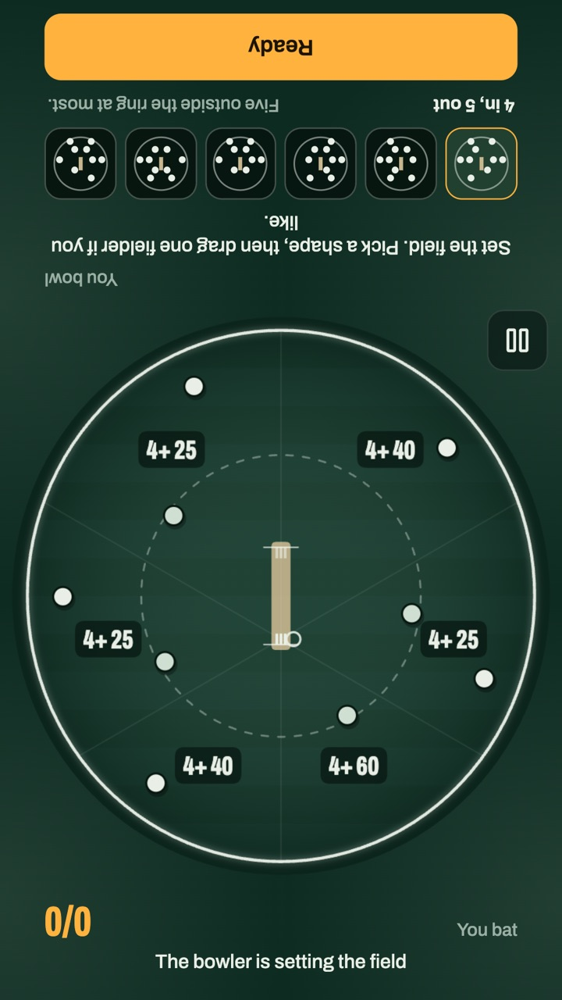
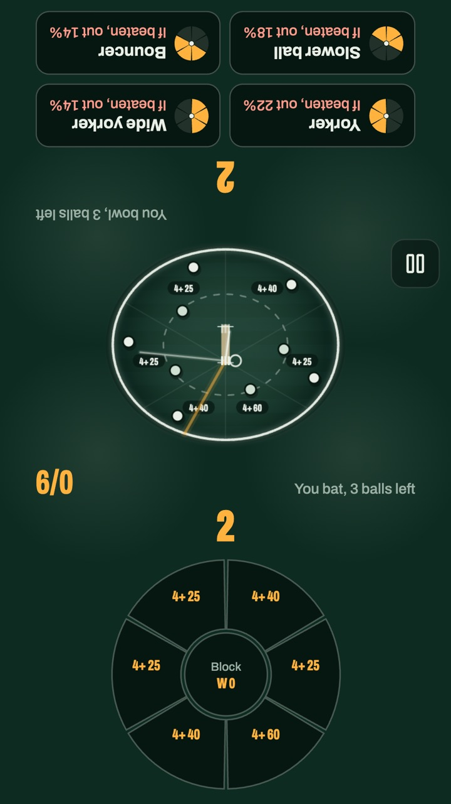
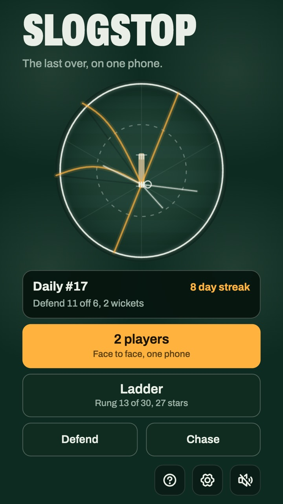
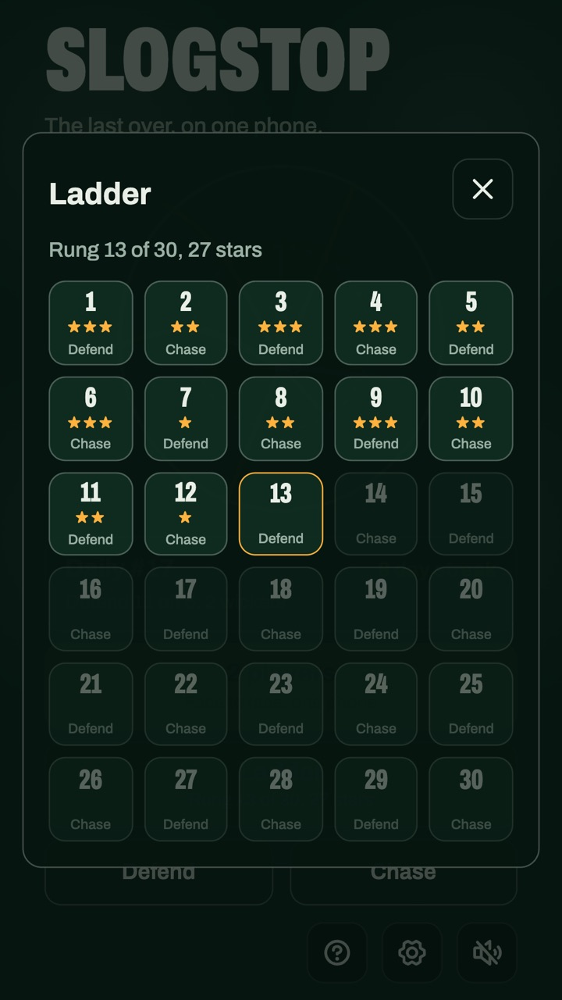
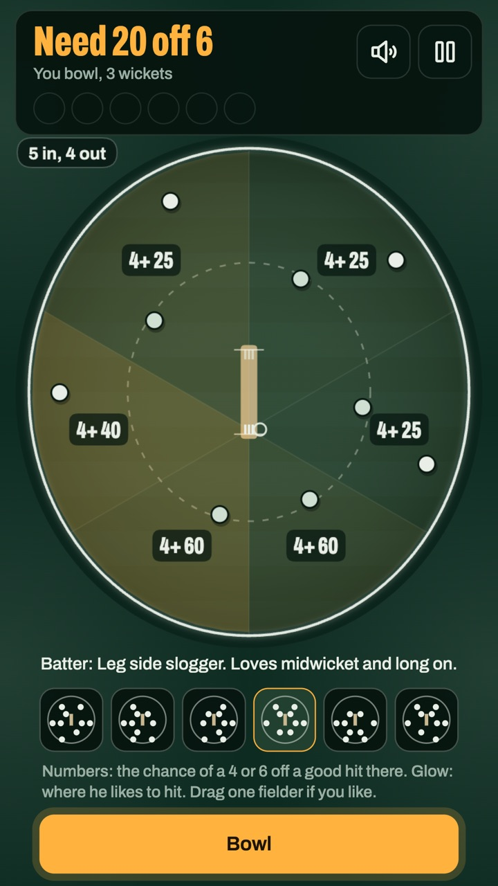
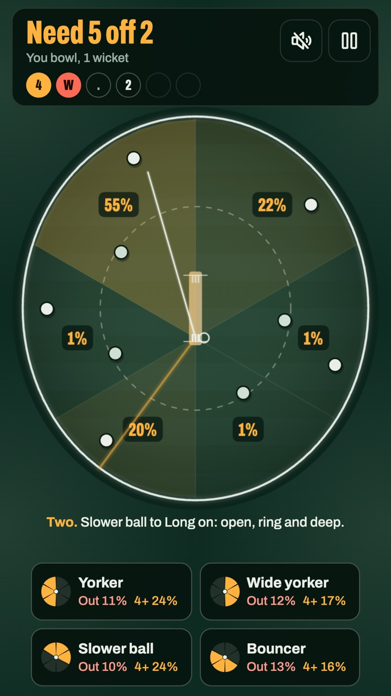
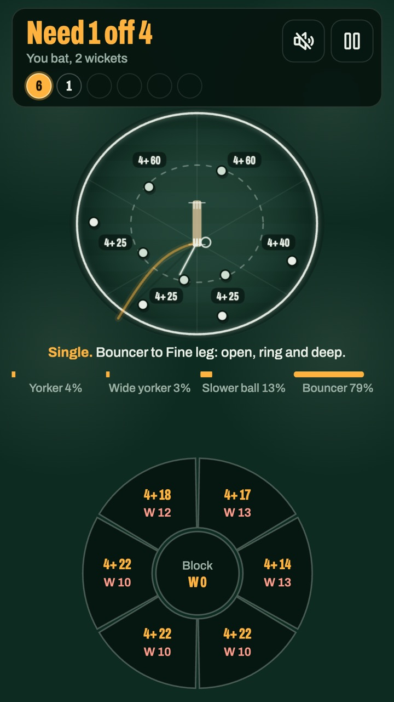
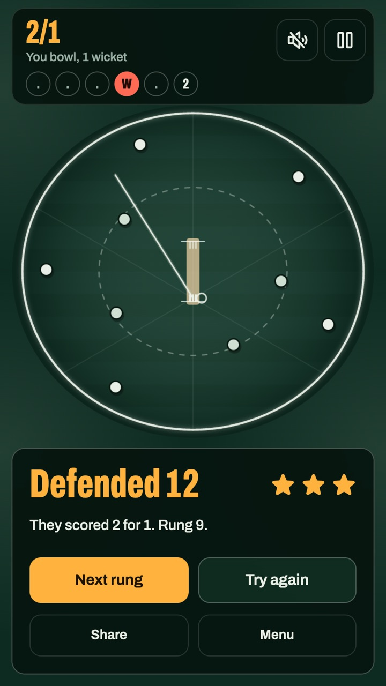

Two players
The phone lies flat between you. One over each, two wickets each, a Super Over if it ends level. The top half faces one player and the bottom half faces the other, so nobody hands the phone over.

A turn based cricket duel for two friends face to face on one phone. Set the field, then outguess each other.

Every mode uses the same rules. The field is always in view, and only the ball and the shot are hidden.
The phone lies flat between you. One over each, two wickets each, a Super Over if it ends level. The top half faces one player and the bottom half faces the other, so nobody hands the phone over.

The same over for everyone, new every day, with one try and a streak that counts the days you finish it.

Protect a total off the last over. A heat map shows where the computer batter wants to hit.
Score the runs. The bowler's plan is drawn as four bars, and every zone shows its odds.
Thirty handmade last overs, Defend and Chase in turn, with three stars on each. The first six teach you the chart. The last ten are hard, and the thirtieth is meant to be.

The bowler picks a delivery. The batter picks one of six scoring zones, or blocks. Both choices are hidden until the reveal, and the field is public the whole time.
Every delivery shuts three zones and leaves three open, and every zone is open to exactly two deliveries. That is the whole puzzle: there is no safe zone for the batter and no safe ball for the bowler.
An open zone is a good shot, and the fielders decide how good. An open zone with nobody near it goes for a boundary about 85 times in 100. With a deep fielder in it, about 40. A shut zone means the batter is beaten, and a beaten batter can be out.
After every ball one short line says why it went the way it did, such as "Slower ball to long on: open, nobody deep. Six."
| Delivery | Open to the batter | Shut, out if beaten |
|---|---|---|
| Yorker | Fine leg, midwicket, long on | Long off, cover, third man (22%) |
| Wide yorker | Long off, cover, third man | Fine leg, midwicket, long on (14%) |
| Slower ball | Long off, cover, long on | Third man, fine leg, midwicket (18%) |
| Bouncer | Third man, fine leg, midwicket | Long off, cover, long on (14%) |




A first over takes about a minute. The game starts you on rung one of the ladder, with the field already set.
Before each over the bowler chooses one of six field shapes and may drag one fielder to any empty place. The badge shows how many are in the ring and how many are out. At most five can be outside the ring. Numbers on the ground show the chance of a four or a six off a good hit in each zone.
The bowler taps one of four deliveries, each showing its out chance and boundary chance. The batter taps one of six zones or the block in the middle. Block can never get you out, and gives a dot more often than a single.
In a duel both players tap during a count of three, two, one, like a game of hand cricket. The first tap locks your pick and dims your buttons, so the other side cannot read it across the table. The reveal comes as soon as both have locked.
Late taps follow cricket's own rules. A bowler with no pick when the throw closes bowls a no ball: one run, a full toss, and the next ball is a free hit that cannot get the batter out. A batter with no pick leaves the ball, which is a dot.
Every ball leaves an amber line from the bat to where it went. The six lines of an over build a wagon wheel on the ground. Amber lines are boundaries, paler lines are dots and singles, and a red mark shows a wicket.
In Defend you win by holding the batter below the target. In Chase you win by reaching it before you run out of balls or wickets. In a duel the higher total wins, and a tie goes to a Super Over, up to three times.
Nothing here needs luck. It needs a little reading.
The batter's style is written on the start card. A leg side slogger loves midwicket and long on, so put your deep fielders there and shut the leg side with a wide yorker. A cutter wants the off side, so bring the yorker. Matching the field to the batter's glow costs nothing and often decides the over.
Five fielders outside the ring is the maximum, but you rarely need all five. A thin ring lets a single turn into two.
The computer batter reads the over. Bowl three yorkers in a row and he will start leaning to the leg side before you release the fourth. Mix a yorker with a slower ball and a bouncer, and when you need a wicket, bowl the delivery that shuts the zone he likes most.
A yorker or a wide yorker slips into a full toss one ball in twelve, and a full toss opens every zone. The odds on the buttons already include that slip.
A zone with nobody near it is worth about 85 boundary chances in 100, but only if the delivery leaves it open. Each zone is open to two deliveries, so ask which two, and which the bowler is more likely to pick. In Chase, the four bars show the computer bowler's plan, and the odds on each zone are already worked out against it.
When you need one run off the last ball, block is not a bad idea. It can never get you out, and a single comes 45 times in 100.
With two wickets in hand you can attack a shut zone, where the out chance is only 14 to 22 percent. With one wicket left, switch to the delivery or the zone with the lowest out number, even if the boundary chance is smaller. The first ladder star in Chase only asks you to get there. The third asks you to get there without losing a wicket.
The Daily is always a Defend, so everyone is solving the same over. It is built so that more than one field shape can win it. Try the shape the batter's glow suggests, and if you lose, the result line still counts toward your streak. A shared line such as "Slogstop #41: defended 11, W . 1 4 . W" tells your friends how your over went without telling them how to win it.
You can send any finished over as a Beat my over link. Your friend opens the same over in a browser, with your line shown first, and plays it for themselves.
Slogstop is free to play and supported by ads. There are no banner ads in the app. A full screen ad can appear only when you press Next after a finished over or duel, never in your first three, at most one for every two, and never around the Daily. Rewarded ads are always your choice, with the reward named on the button.
Remove ads and archive is a single purchase through Google Play. It removes the full screen ads for good, opens every past Daily Last Over and gives the rewarded bonuses without an ad. Restore it on any device signed in to the same Google account.
The browser version at apps.mohdshayan.com/slogstop/play shows Google AdSense ads beside the game on wide screens and has no purchases. Read the privacy policy for the details.
No. The game runs from files on your phone and plays offline. Ads and purchases need a connection, and everything else works without one.
Yes. In the browser version each player gets one row of keys. The top player uses Q W E R T Y U and the bottom player uses Z X C V B N M. Bowling uses the first four keys of the row, and batting uses all seven: six zones in wheel order, then block.
English, Hindi, Urdu, Bengali, Tamil, Telugu, Marathi and Sinhala. The game follows your device language, and Settings lets you choose another. Urdu is laid out right to left, while the ground and the two halves never mirror.
Yes, by your local date. Day one was 1 November 2026. The result for a given plan is always the same, so the same field and the same deliveries give the same over for every player.
One watched rewarded ad, once a day, and your shared line is marked R so friends know. With Remove ads and archive it is granted at once. A missed day can also be repaired once a week the same way.
No. Every batter and bowler is fictional, and the game uses no league, team, kit or player names.
Slogstop is meant for players aged 16 and over, and it is not directed at children.